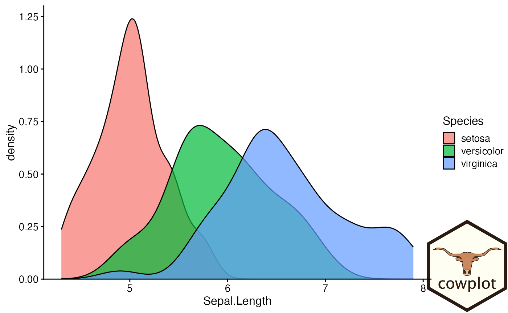
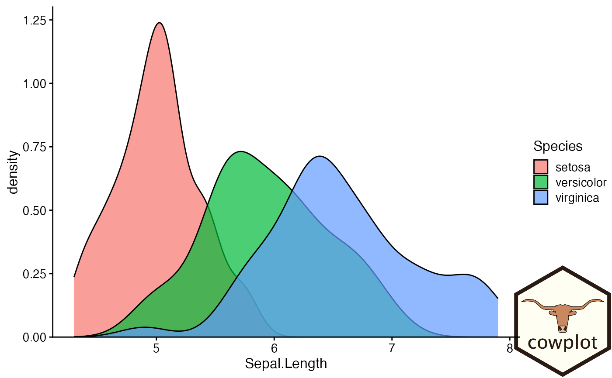

Places an image somewhere onto the drawing canvas. By default, coordinates run from
0 to 1, and the point (0, 0) is in the lower left corner of the canvas. Requires the magick
package to work, and fails gracefully if that package is not installed.
draw_image(
image,
x = 0,
y = 0,
width = 1,
height = 1,
scale = 1,
clip = "inherit",
interpolate = TRUE,
hjust = 0,
vjust = 0,
halign = 0.5,
valign = 0.5
)Arguments
- image
The image to place. Can be a file path, a URL, or a raw vector with image data, as in
magick::image_read(). Can also be an image previously created bymagick::image_read()and related functions.- x
The x location of the image. (Left side if
hjust = 0.)- y
The y location of the image. (Bottom side if
vjust = 0.)- width
Width of the image.
- height
Height of the image.
- scale
Scales the image relative to the rectangle defined by
x,y,width,height. A setting ofscale = 1indicates no scaling.- clip
Set to "on" to clip the image relative to the box into which it is draw (useful for
scale > 1). Note that clipping doesn't always work as expected, due to limitations of the grid graphics system.- interpolate
A logical value indicating whether to linearly interpolate the image (the alternative is to use nearest-neighbour interpolation, which gives a more blocky result).
- hjust, vjust
Horizontal and vertical justification relative to x.
- halign, valign
Horizontal and vertical justification of the image inside the box.
Examples
library(ggplot2)
# Use image as plot background
p <- ggplot(iris, aes(x = Sepal.Length, fill = Species)) +
geom_density(alpha = 0.7) +
scale_y_continuous(expand = expansion(mult = c(0, 0.05))) +
theme_half_open(12)
logo_file <- system.file("extdata", "logo.png", package = "cowplot")
ggdraw() +
draw_image(
logo_file, scale = .7
) +
draw_plot(p)
 # Place in lower right corner
ggdraw() +
draw_image(
logo_file, scale = .3, x = 1,
hjust = 1, halign = 1, valign = 0
) +
draw_plot(p)

if (FALSE) { # \dontrun{
# Make grid with plot and image
cow_file <- system.file("extdata", "cow.jpg", package = "cowplot")
p2 <- ggdraw() + draw_image(cow_file, scale = 0.9)
plot_grid(
p + theme(legend.position = c(1, 1), legend.justification = c(1, 1)),
p2,
labels = "AUTO"
)
# Manipulate images and draw in plot coordinates
if (requireNamespace("magick", quietly = TRUE)){
img <- magick::image_transparent(
magick::image_read(logo_file),
color = "white"
)
img2 <- magick::image_negate(img)
ggplot(data.frame(x = 1:3, y = 1:3), aes(x, y)) +
geom_point(size = 3) +
geom_abline(slope = 1, intercept = 0, linetype = 2, color = "blue") +
draw_image(img , x = 1, y = 1, scale = .9) +
draw_image(img2, x = 2, y = 2, scale = .9)
}
} # }
# Place in lower right corner
ggdraw() +
draw_image(
logo_file, scale = .3, x = 1,
hjust = 1, halign = 1, valign = 0
) +
draw_plot(p)

if (FALSE) { # \dontrun{
# Make grid with plot and image
cow_file <- system.file("extdata", "cow.jpg", package = "cowplot")
p2 <- ggdraw() + draw_image(cow_file, scale = 0.9)
plot_grid(
p + theme(legend.position = c(1, 1), legend.justification = c(1, 1)),
p2,
labels = "AUTO"
)
# Manipulate images and draw in plot coordinates
if (requireNamespace("magick", quietly = TRUE)){
img <- magick::image_transparent(
magick::image_read(logo_file),
color = "white"
)
img2 <- magick::image_negate(img)
ggplot(data.frame(x = 1:3, y = 1:3), aes(x, y)) +
geom_point(size = 3) +
geom_abline(slope = 1, intercept = 0, linetype = 2, color = "blue") +
draw_image(img , x = 1, y = 1, scale = .9) +
draw_image(img2, x = 2, y = 2, scale = .9)
}
} # }